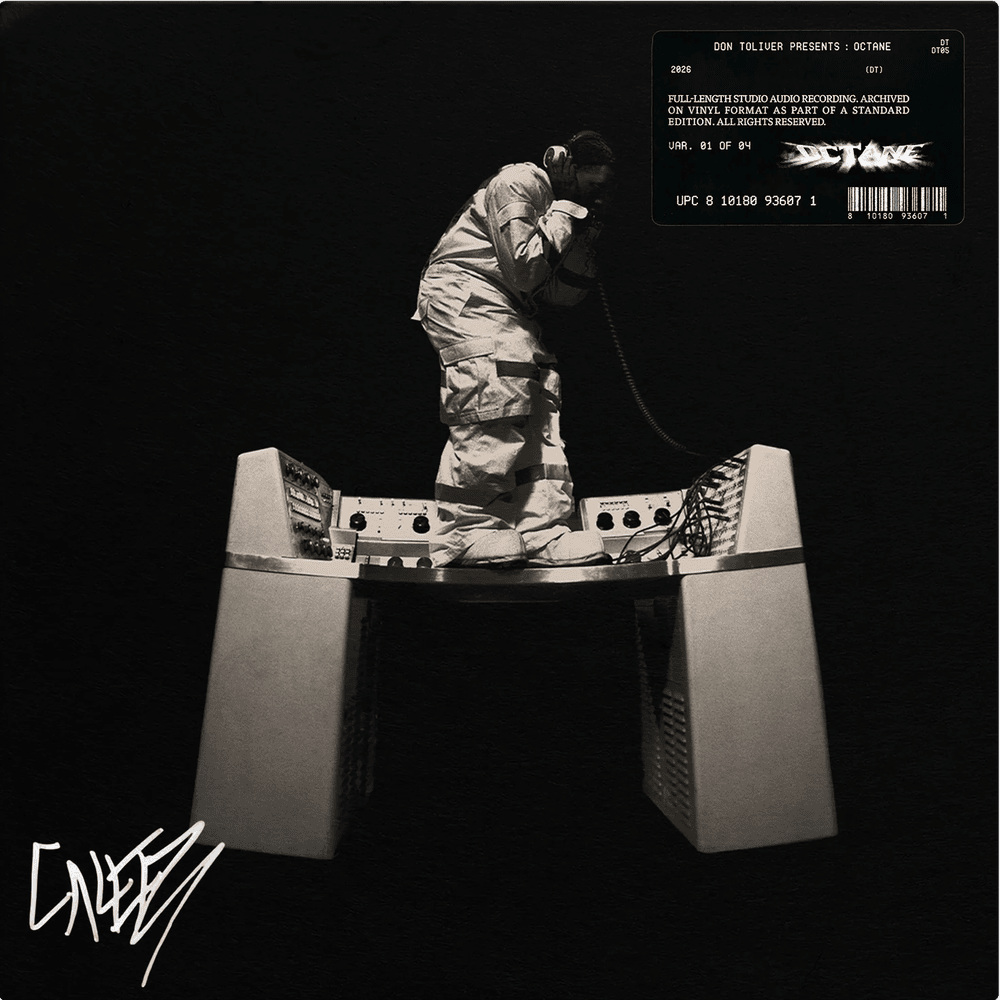
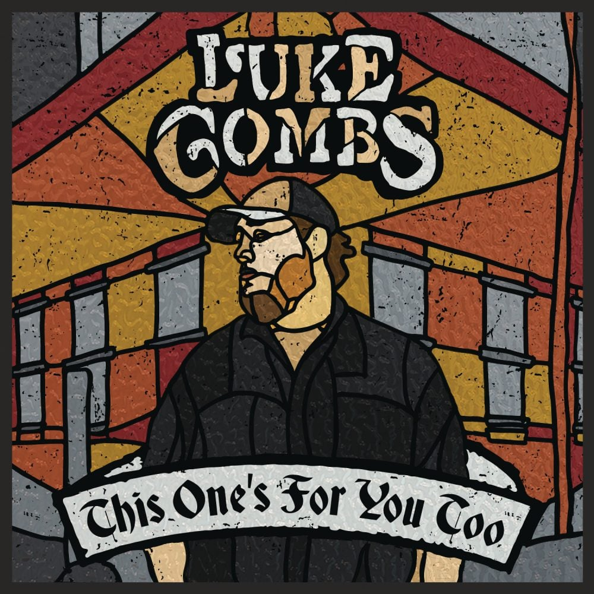
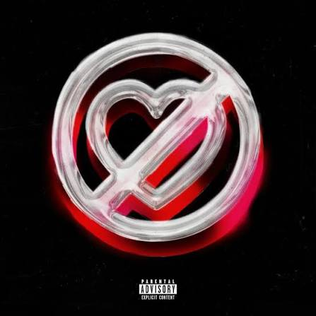
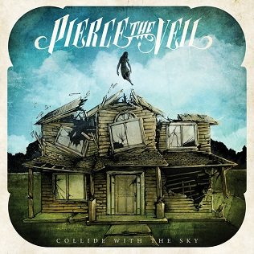
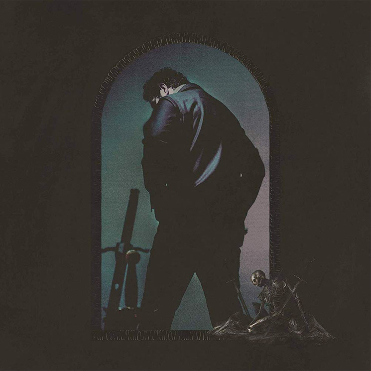

My Current Favorite Albums
This collection features six album covers from some of my current favorite singers, bands, and songs. I chose these albums because they represent the music I've been listening to the most lately and each one has a unique style and sound that I enjoy. The collection reflects my current music taste and includes a mix of different genres and artists that I keep coming back to. These albums are some of my favorites right now and are the ones I have on repeat the most.
YHLQMDLG
Album | 2020 | Bad Bunny
YHLQMDLG is Bad Bunny's second studio album, released in 2020. The title stands for "Yo Hago Lo Que Me Da La Gana," which translates to "I Do Whatever I Want." Blending reggaeton, Latin trap, and hip-hop, the album features energetic songs like "Safaera" and "Yo Perreo Sola." I included this album in my collection because it's one of my favorites to listen to when I need an energy boost. The music always hypes me up, whether I'm working out, driving, or just want to be in a better mood.

Octane
Album | 2026 | Don Toliver
OCTANE is Don Toliver’s fifth studio album, released in 2026. The project blends melodic trap and alternative hip-hop with high-energy production and atmospheric sounds, showcasing his signature vocals and futuristic style. It includes standout tracks like “Bandit,” “Lose My Mind,” and “Rendezvous” featuring Yeat. I included this album because my brother introduced me to Don Toliver, and I’ve been a fan ever since. His music always reminds me of that connection, and I’ve also had the chance to see him live twice, which made me appreciate his music even more.

This One's for You
Album | 2017 | Luke Combs
This One’s for You is Luke Combs’ debut studio album, released in 2017. It includes some of his biggest songs like “Hurricane,” “When It Rains It Pours,” and “One Number Away.” This is the album that got me back into liking country music, and it ended up meaning a lot more to me than I expected. I got to see Luke Combs perform in Lubbock at the Supermarket Arena, and it also helped me connect with my roommate. We even had some really heartfelt, emotional moments listening to this album together.

Pero No Te Enamores
Album | 2024 | Fuerza Regida
PERO NO TE ENAMORES is an album by Fuerza Regida released in 2024. It blends regional Mexican music with EDM and club-style production, creating a more experimental and energetic sound than their earlier work. The album includes tracks like “TUQLO,” “FRESITA,” “SECRETO VICTORIA,” and “BELLA,” and it also features “NEL.” I included this album because Fuerza Regida is one of my favorite groups, and when I’m hanging out with my cousins we always love playing this album. I’ll actually be seeing them again next month, so it reminds me of those good times we share together. It’s an album I listen to when I want something upbeat and high energy. This album has been particularly meaningful to me as it represents the rich cultural heritage of Mexico while also embracing contemporary trends.

Collide with the Sky
Album | 2012 | Pierce the Veil
This album includes some of Pierce the Veil’s most well-known songs like “King for a Day,” “Bulls in the Bronx,” and “Hold On Till May.” The album mixes post-hardcore and emo influences with emotional lyrics and intense, high-energy instrumentals. I’m not exactly sure how I came across this band, but I’m really glad I did because the lyrics stand out to me in a relatable way. I saw them at ACL last year, and I’ll get the chance to see them again in September. It’s an album I connect with because it balances emotional depth with loud, powerful music.

Hollywood's Bleeding
Album | 2019 | Post Malone
Personally I believe this is one of his most well-known albums, featuring a mix of hip-hop, pop, rock, and even country influences. It includes songs like “Circles,” “Goodbyes,” and “Sunflower,” showing how versatile his sound can be across different styles. I’ve been a Posty fan since day one, and it was honestly hard to pick just one album because I enjoy so much of his music. My siblings, cousins, my best friend and I all went to see him together, and it ended up being one of the most amazing experiences I’ve had. His music really connects with a lot of different moods and moments in my life, including my high school graduation, "Congratulations" was my graduation theme song.